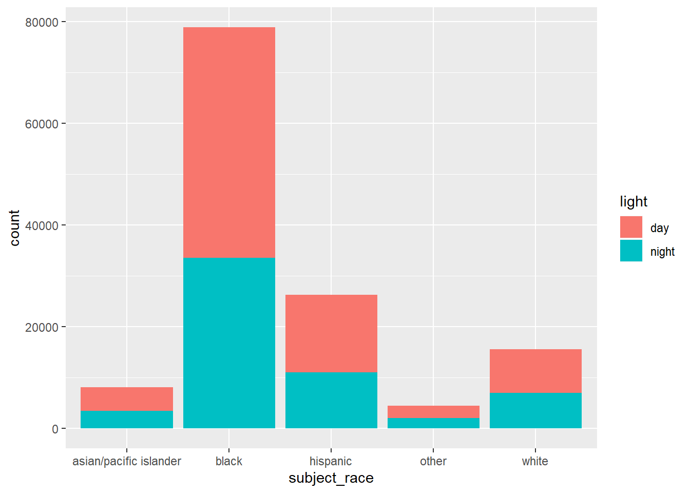

Chapter 8 Common Violations and Map Visualisations in San Antonio, TX
8.1 Common Violations
Here I graphed the 5 violations that occured most frequently. It is important to notice that this would only include those violations that are worded exactly the same. More work would need to be done in order to find which violations mean the same thing but some had typos or minor differences.
VioData <- DBI::dbGetQuery(con,
"SELECT violation, COUNT(violation) AS 'num_violations' FROM TXsanantonio
GROUP BY violation
ORDER BY `num_violations` DESC
LIMIT 5")
ggplot(data = VioData) + geom_bar(mapping = aes(x = violation, y = num_violations),
stat = 'identity') + coord_flip()
I then took these top 5 violations and split them up by sex and race. I also included additional graphs of the 2-5 violations for clarity because of the overwhelming violation of speeding.
top5_vio <- DBI::dbGetQuery(con,
"SELECT subject_sex, subject_race, violation FROM TXsanantonio
WHERE violation = 'USE OF HAND-HELD MOBILE COMMUNICATION DEVICE'
OR violation = 'SPEEDING-POSTED LIMIT'
OR violation = 'SPEEDING IN SCHOOL ZONE'
OR violation = 'OPERATING A MOTOR VEHICLE WITHOUT A VALID LICENSE'
OR violation = 'IMPROPER USE OR FAILURE TO USE SAFETY BELT BY PERS'")
top4_vio <- DBI::dbGetQuery(con,
"SELECT subject_sex, subject_race, violation FROM TXsanantonio
WHERE violation = 'USE OF HAND-HELD MOBILE COMMUNICATION DEVICE'
OR violation = 'SPEEDING IN SCHOOL ZONE'
OR violation = 'OPERATING A MOTOR VEHICLE WITHOUT A VALID LICENSE'
OR violation = 'IMPROPER USE OR FAILURE TO USE SAFETY BELT BY PERS'")
ggplot(data = top5_vio) + geom_bar(mapping = aes(x = violation, fill = subject_race)) +
coord_flip()8.2 Map Overlay
During the EDA phase, geography became of interest using the latitude and longitude variables from the dataset. This image displays the plot of the San Antonio dataset using ggplot with the dots grouped by the race of the victim of the stop. This raised a few questions. For example, we questioned how highway stops may differ from non highway stops given a potential difference in demographics for those who drive on the highways. We also recognized the possibility of controlling for demographics of certain neighborhoods and comparing stop rates to those demographics. Both questions raise interesting questions for further investigation.
Coordinates <- DBI::dbGetQuery(con,
"SELECT * FROM TXsanantonio LIMIT 1000")
coor <- DBI::dbGetQuery(con,
"SELECT lng, lat, subject_race FROM TXsanantonio LIMIT 1000")
coor$lng <- with(coor, as.numeric(lng))
coor$lat <- with(coor, as.numeric(lat))
race_plot <- ggplot(Coordinates, aes(x = as.numeric(lng),
y = as.numeric(lat), xaxt = 'n', yaxt = 'n')) +
geom_point(aes(color = subject_race)) +
xlab("Longitude") + ylab("Latitude") + coord_quickmap()
race_plot
coord_plot <- qmplot(lng, lat, data = coor, maptype = "toner-background",
color = subject_race, xlim = c(-99, -98.25), ylim = c(29, 29.6))
coord_plot
qmplot(lng, lat, data = coor, maptype = "toner-background",
color = subject_race, xlim = c(-98.75, -98.3), ylim = c(29.35, 29.5)) This is the same coordinate plot for the Oakland Dataset.
This is the same coordinate plot for the Oakland Dataset.
This is a density plot of stops for the oaklans dataset. This was in an attempt to see if there were any particular areas of high concentration.
qmplot(lng, lat, data = coor2, geom = "blank",
zoom = 10, maptype = "toner-background", darken = 0, legend = "topleft") +
stat_density_2d(aes(fill = ..level..), geom = "polygon", alpha = .5, color = NA) +
scale_fill_gradient2("Stop\nPropensity", low = "white", mid = "yellow", high = "red",
midpoint = 100)